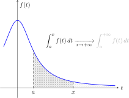
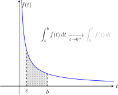

3 Intégrales généralisées
Dans tout ce chapitre, \(I\) désigne un intervalle non vide de \(\mathbb{R}\), d’extrémités \(a,b \in \mathbb{R}\cup \left\{ \pm \infty\right\}\), avec \(a \leqslant b\), et \(\mathbb{K}\) désigne \(\mathbb{R}\) ou \(\mathbb{C}\).
3.1 Définitions
3.1.1 Intégrales généralisées
Definition 3.1 (Intégrale généralisée) L’intégrale sur \(I\) d’une fonction continue \(f:I\to \mathbb{K}\), est dite généralisée si \(I\) est ouvert en au moins une de ses extrémités. Si \(\alpha\) est une telle extremité, on précise que \(I\) est généralisée en \(\boldsymbol{\alpha}\).
Remark 3.1. Une intégrale peut être généralisée en ses deux bornes. On parle alors d’intégrale doublement généralisée.
“L’intégrale de \(f\) sur \(I\)” s’abrège usuellement \(\int_{I}f\), \(\int_{I}f(t)dt\) ou \(\int_{a}^{b}f(t)dt\). Il faut noter l’ambiguité de cette dernière notation (qui est pourtant la plus utilisée) car elle ne précise pas si les bornes \(a\) et \(b\) sont inclues ou exclues. C’est justement à vous que revient de lever cette ambiguité pour étudier l’aspect généralisé ou non de l’intégrale.
Example 3.1 L’intégrale \(\int_{1}^{+\infty}\frac{dx}{x^2}\) est généralisée en \(+\infty\) uniquement car la fonction \(x \mapsto \frac{1}{x^{2}}\) est continue sur \([1,+\infty[\).
Example 3.2 L’intégrale \(\int_{0}^{1}\frac{dt}{\sqrt{t}}\) est généralisée uniquement en \(0\) car la fonction \(t \mapsto \frac{1}{\sqrt{t}}\) est continue sur \(]0,1]\).
Example 3.3 L’intégrale \(\int_{0}^{1}\ln(1-t)dt\) est généralisée uniquement en \(1\) car la fonction \(t \mapsto \ln(1-t)\) est continue sur \([0,1[\).
Example 3.4 L’intégrale \(\int_{-\infty}^{+\infty}e^{-x^2}dx\) est généralisée en \(+\infty\) et en \(-\infty\) car la fonction \(x \mapsto e^{-x^2}\) est continue sur \(]-\infty,+\infty[\).
L’aspect généralisée d’une intégrale se lit sur le domaine de la fonction continue intégrée.
Notez que, jusqu’à présent, on s’est seulement entendu sur le sens de la phrase “l’intégrale de \(f\) sur \(I\) est généralisée”. Nous pas attribué de valeur numérique à cette “intégrale”. C’est ici qu’intervient la notion de convergence.
Definition 3.2 (Convergence d’une intégrale généralisée sur un intervalle semi ouvert à droite) Soit \(f:[a,b[ \to \mathbb{K}\) une fonction continue. On dit que l’intégrale de \(f\) sur \([a,b[\) converge en \(\boldsymbol{b}\) si l’intégrale partielle \(\int_{a}^{x}f(t)dt\) admet une limite finie quand \(x \to b^-\). On pose alors \[ \boxed{ \int_{a}^{b}f(t)dt \underset{\small \mathrm{def}}{=}\lim_{x \to b^-} \int_{a}^{x}f(t)dt} \] Dans le cas contraire, on dit que l’intégrale de \(f\) sur \(I\) diverge. La convergence ou la divergence d’une intégrale s’appelle sa nature.
Remark 3.2. On définit de même la convergence d’une intégrale sur un intervalle semi ouvert à gauche \(]a,b]\) en considérant les intégrales partielles \(\int_{x}^{b}f(t)dt\) quand \(x \to a^{+}\).


On dit aussi qu’une intégrale généralisée bien définie ou existe (en référence à la limite qui la définie) pour signifier qu’elle converge ; ce sont des synonymes.
Example 3.5 Pour tout \(X \geqslant 1\), on a
\[ \int_{1}^{X}\frac{dx}{x^{2}} = 1- \frac{1}{X} \underset{X \to +\infty}{1}. \]
Donc l’intégrale \(\int_{1}^{+infty}\frac{dx}{x^{2}}\) converge et vaut \(1\).
Example 3.6 Pour tout \(\varepsilon>0\), on a
\[ \int_{\varepsilon}^{1}\frac{dx}{x^{2}} = \frac{1}{\varepsilon}-1 \underset{\varepsilon \to 0^{+}}{\to} +\infty. \]
Donc l’intégrale \(\int_{0}^{1}\frac{dx}{x^{2}}\) diverge.
Example 3.7 Pour tout \(X \geqslant 1\), on a
\[ \int_{1}^{X}\frac{dx}{x} = \ln(X) \underset{X \to +\infty}{\to} +\infty, \]
donc l’intégrale \(\int_{1}^{+\infty}\frac{dx}{x}\) diverge.
Remark 3.3. Les exemples précédents montrent qu’il ne faut pas confondre la convergence de l’intégrale et de la fonction intégrée (l’intégrande). Par exemple, la fonction \(x \mapsto 1/x\) admet une limite en \(+\infty\), mais l’intégrale \(\int_{1}^{+\infty}\frac{dx}{x}\) diverge.
Il ne faut surtout pas confondre la convergence de l’intégrale et de la fonction intégrée (l’intégrande).
On vient d’associer à certaine intégrales une valeur numérique. On va donc pouvoir commencer à calculer avec des intégrales généralisées. Ce point sera abordé plus en détail dans la section ??? mais nous énonçons dès maintenant la relation de Chasles, attendue de toute théorie satisfaisante de l’intégration.
Proposition 3.1 (Relation de Chasles sur un intervalle semi ouvert) Soit \(f:[a,b[ \to \mathbb{K}\) une fonction continue. Alors pour tout point \(c \in [a,b[\), les intégrales \(\int_{a}^{b}f(t)dt\) et \(\int_{c}^{b}f(t)dt\) ont même nature et, en cas de convergence, on a \[ \int_{a}^{b}f(t)dt = \int_{a}^{c}f(t)dt + \int_{c}^{b}f(t)dt. \]
Si elles sont généralisées uniquement en \(b\), les intégrales \(\int_{a}^{b}f(t)dt\) et \(\int_{c}^{b}f(t)dt\) ont même nature.
Remark 3.4. La Proposition 3.1 et le Tip 3.1 se généralisent naturellement au cas d’un intervalle semi ouvert à gauche \(]a,b]\).
Une fois la convergence définie dans le cas d’intervalles semi ouverts, la relation de Chasles – que l’on veut valide pour les intégrales généralisées – suggère la définition suivante dans le cas d’un intervalle ouvert.
Definition 3.3 (Convergence d’une intégrale généralisée sur un intervalle ouvert) Soit \(f:]a,b[ \to \mathbb{K}\) une fonction continue. On dit que l’intégrale de \(f\) sur \(]a,b[\) converge si elle converge en \(\boldsymbol{a}\) et en en \(\boldsymbol{b}\), c.à.d s’il existe un réel \(c \in ]a,b[\), tel que les deux intégrales \(\int_{a}^{c}f(t)dt\) et \(\int_{c}^{b}f(t)dt\) convergent. On pose alors
\[ \int_{a}^{b}f(t)dt \underset{\mathrm{def}}{=} \int_{a}^{c}f(t)dt + \int_{c}^{b}f(t)dt. \]
Dans le cas contraire, on dit que l’intégrale de \(f\) sur \(]a,b[\) diverge. La convergence ou la divergence d’une intégrale s’appelle sa nature.
Remark 3.5. Cette définition et la valeur de l’intégrale ne dépendent pas du point \(c\) utilisé par la relation de Chasles satisfaite par les intégrales généralisées sur un intervalle semi ouvert (Proposition 3.1).
EXEMPLES
3.1.2 Intégrales faussement généralisées
Nous étudions ici le cas des intégrales dites “faussement généralisées”, très fréquentes en pratique.
Definition 3.4 (Integrale faussement généralisée) Soit \(f:I \to \mathbb{K}\) une fonction continue et \(\alpha\) une extrémité ouverte de \(I\). On dit que l’intégrale de \(f\) sur \(I\) est faussement généralisée en \(\boldsymbol{\alpha}\) si \(f\) se prolonge par continuité en \(\alpha\). On dit que l’intégrale de \(f\) sur \(I\) est faussement généralisée si \(f\) se prolonge par continuité en chaque extrémité ouverte de \(I\).
La note suivante est à comparer au Warning 3.1.
Le prolongement par continuité est réservé aux extrémités finies de \(I\). On ne peut donc par parler d’intégrales “faussement généralisées en \(\pm\infty\)” lorsque la fonction intégrée admet une limite en \(\pm \infty\).
Proposition 3.2 (Convergence des intégrales faussement généralisées) Si l’intégrale de \(f\) sur \(I\) est faussement généralisée, elle est convergente et
\[ \int_I f = \int_{\bar{I}} f. \]
Ici, \(\bar{I}\) désigne l’adhérence de l’intervalle \(I\) ; il s’agit du même intervalle dans lequelle on a refermé toutes les bornes ouvertes différentes de \(\pm \infty\). Cette notion sera vue plus en détail dans un chapitre ultérieur.
EXEMPLES
3.2 Calculer avec des intégrales généralisées
3.2.1 Propriétés des intégrales convergentes
Les intégrales convergentes héritent de toutes les propriétés préservées par passage à la limite (égalités, inégalités larges,…). La philosophie générale est la suivante :
Sous réserve de convergence, les propriétés des intégrales généralisées sont les mêmes que celles des intégrales classiques.
On pourra donc manipuler des intégrales généralisées de la même manière que l’on manipule des intégrales classiques, à condition de s’assurer que les quantités manipulées existent !
Proposition 3.3 (Propriétés des intégrales convergentes) Soient \(f,g:I \to \mathbb{K}\) des fonctions continues sur \(I\). On suppose que les intégrales de \(f\) et \(g\) sur \(I\) convergent. Alors
- pour tout \(\lambda \in \mathbb{K}\), l’intégrale de \(f+\lambda g\) sur \(I\) converge et \[ \int_I (f + \lambda g) = \int_I f + \lambda \int_I g, \quad \textit{(linéarité de l'intégrale)} \]
- la relation de Chasles est vérifiée pour tout point \(c\) de \(I\), \(\quad \textit{(relation de Chasles)}\)
- si \(\mathbb{K}=\mathbb{R}\) et si \(f \leqslant g\) sur \(I\), alors 1 \[ \int_I f \leqslant \int_I g, \quad \textit{(croissance de l'intégrale)}. \]
Remark 3.10. On dit aussi que l’intégrale est positive2 : si \(f \geqslant 0\) sur \(I\), alors \(\int_If \geqslant 0\). Cette propriété est équivalente à la croissance de l’intégrale par linéarité.
Example 3.8 En admettant (???) que pour tout \(n \in \mathbb{N}\), l’intégrale \(I_{n}=\int_{0}^{+\infty}P(t)e^{-t}dt\) converge, alors pour tout \(P \in \mathbb{R}[X]\), l’intégrale \(\int_{0}^{+\infty}P(t)e^{-t}dt\) converge comme combinaison linéaire d’intégrales convergentes.
Example 3.9 Si l’intégrale de \(f\) sur \([a,+\infty[\) converge et si \(f \geqslant 0\) sur \([a,+\infty[\), alors la relation de Chalses et la positivité de l’intégrale montre que
\[ \forall x \geqslant a,\ \int_{a}^{x}f(t)dt \leqslant \int_{a}^{+\infty}f(t)dt. \]
Cette propiétée est par ailleurs claire graphiquement, Figure 3.1 (a).
Example 3.10 Si l’intégrale de \(f\) sur \(I\) converge, et si l’intégrale de \(g\) sur \(I\) diverge, alors l’intégrale de \(f+g\) sur \(I\) diverge3. Sinon, par différence d”intégrales convergentes, l’intégrale de \(g\) sur \(I\) serai convergente.
En pratique, ces propriétés permettent de calculer avec des intégrales généralisées. Il faut leur ajouter deux outils d’usage constant: le théorème d’intégration par parties et le théorème de changement de variables.
3.2.2 Intégrations pas parties et changement de variable
Concernant l’intégration pas parties, il n’y a pas (en TSI) d’énoncé propre aux intégrales généralisées. Il faudra systématiquement :
- revenir à une intégrale partielle,
- effectuer une intégration par parties classique,
- passer à la limite pour obtenir un résultat sur des intégrales généralisées.
Example 3.11 A l’aide d’une intégration par partie, montrer que l’intégrale \(I=\int_{0}^{1}x\ln(x)dx\) converge4, et calculer sa valeur.
Soit \(0<\varepsilon<1\). Les fonctions \(x \mapsto ln(x)\) et \(x \mapsto x^{2}/2\) sont de classe \(C^{1}\) sur \(]\varepsilon,1[\). Par intégration par parties, on a donc
\[\begin{equation}\tag{$\star$} \int_{\varepsilon}^{1}x \ln(x)dx = \left[\frac{x^{2}}{2}\ln(x)\right]_{\varepsilon}^{1} - \int_{\varepsilon}^{1}\frac{x}{2}dx. \end{equation}\]
Le crochet tend vers \(0\) quand \(\varepsilon \to 0^{+}\) par croissance comparée. L’intégrale de droite tend vers \(\int_{0}^{1}\frac{x}{2}dx = \frac{1}{4}\) quand \(\varepsilon \to 0^+\) (cette intégrale n’est pas généralisée). Donc l’intégrale \(\int_{0}^{1}x \ln(x)dx\) converge et, en passant à la limite dans l’égalité \((\star)\), on obtient
\[ \int_{0}^{1}x \ln(x) dx = -\frac{1}{4}. \]
On utilise souvent une intégration par parties pour établir une relation entre deux intégrales, par exemple une relation de récurrence.
Example 3.12 On admet que pour tout \(n \in \mathbb{N}\), l’intégrale \(I_{n}=\int_{0}^{+\infty}t^{n}e^{-t}dt\) converge. A l’aide d’une intégration par parties, montrer que
\[ \forall n \in \mathbb{N},\ I_{n+1}=n I_{n}. \]
Soit \(x \geqslant 0\) et \(n \geqslant 0\). Les fonctions \(t \mapsto t^{n+1}\) et \(t \mapsto -e^{-t}\) sont de classe \(C^{1}\) sur \([0,x]\). Par intégration par parties, on obtient
\[ \int_{0}^{x}t^{n+1}e^{-t}dt = \left[-t^{n+1}e^{-t}\right]_0^{x} + (n+1) \int_{0}^{x}t^{n}e^{-t}dt. \]
Le crochet tends vers \(0\) quand \(n \to +\infty\) par croissance comparée. Les deux intégrales étant convergentes, on obtient en passant à la limite dans l’égalité précédente
\[ I_{n+1}= n I_{n}. \]
Pour pouvoir passer à la limite, il faut d’abord s’assurer que toutes les quantités en jeu convergent.
Theorem 3.1 (Changement de variable) Soit \(\varphi:I \to J\) une bijection de classe \(C^{1}\) entre deux intervalles \(I\) et \(J\) de \(\mathbb{R}\). Soit \(f:J \to \mathbb{R}\) une fonction continue. Alors
- les intégrales \(\int_{J}f(x)dx\) et \(\int_{I}f\bigl(\varphi(t)\bigr)|\varphi'(t)|dt\) ont même nature,
- elles sont égales en cas de convergence.
On dit qu’on a effectué le changement de variable \(x=\varphi(t)\), pour lequel \(dx = |\varphi'(t)|dt\).
Remark 3.7. La présence de la valeur absolue dans le calcul du \(dx\) évite de préciser la monotonie du changement de variable \(\varphi\) ; les bornes des intégrales sont toujours rangées. Elle est à privilégier car c’est elle qui se généralise au cas des fonctions de plusieurs variables.
Selon les cas, on disposera de l’espace de départ de \(\varphi\), de l’espace d’arrivée, ou des deux. De manière générale, l’inversion de \(\varphi\) n’est pas nécessaire.
Example 3.13 (On connait les espaces de départ et d’arrivée) On admet que l’intégrale
\[ I = \int_{0}^{1}\frac{dt}{\sqrt{t(1-t)}}dt \]
converge. A l’aide du changement de variable \(t=\frac{1}{1+s}=\varphi(s)\), montrer que
\[ I = \int_{0}^{+\infty}\frac{ds}{\sqrt{s}(1+s)}. \]
C’est le cas d’utilisation le plus courant ; un changement de variable est utilisé pour donner une autre expression d’une intégrale que l’on sait convergente. C’est le cas le plus simple car on connait les espaces de départ et d’arrivée, aux extrémités près (Note 3.1).
Dans notre cas:
L’intégrale \(I\) est généralisée en \(0\) et en \(1\). La fonction \(\varphi\) est une bijection de classe \(C^{1}\) de \(]0,+\infty[\) dans \(]0,1[\). De plus
\[ \forall s \in ]0,+\infty[,\ \varphi'(s) = -\frac{1}{(1+s)^{2}} \]
et
\[ \forall s \in ]0,+\infty[,\ \frac{1}{\sqrt{\varphi(s)\bigr(1- \varphi(s)\bigr)}}=\frac{1+s}{\sqrt{s}} \]
donc par changement de variable
\[ I =\int_{0}^{+\infty} \frac{1}{\sqrt{\varphi(s)\bigr(1- \varphi(s)\bigr)}}|\varphi'(s)|ds = \int_{0}^{+\infty}\frac{ds}{\sqrt{s}(1+s)}. \]
Example 3.14 (On connait l’espace d’arrivée) Déterminer la nature et la valeur de l’intégrale \(\int_{-1}^{1}\frac{dx}{\sqrt{1-x^{2}}}\) à l’aide du changement de variable \(x=\cos(t)\).
L’intégrale \(\int_{-1}^{1}\frac{dx}{\sqrt{1-x^{2}}}\) est généralisée en \(-1\) et en \(1\). On connait ici l’intervalle d’arrivée \(J=]-1,1[\) de la fonction \(\varphi:t \mapsto \cos(t)\). C’est à nous de déterminer l’espace de départ de \(\varphi\) de telle sorte qu’elle soit bijective et de classe \(C^{1}\). Par exemple, \(I=]0,\pi[\) convient.
La rédaction finale devient:
La fonction \(\cos\) est une bijection de classe \(C^{1}\) de \(]0,\pi[\) dans \(]-1,1[\).
De plus,
\[ \forall t \in ]0,\pi[,\ \cos'(t) = -\sin(t) \]
et
\[ \forall t \in ]0,\pi[,\ \frac{1}{\sqrt{1- \cos(t)^{2}}}= \frac{1}{\sqrt{\sin(t)^{2}}}=\frac{1}{|\sin(t)|}. \]
Par changement de variable, l’intégrale proposée a donc même nature que l’intégrale
\[ \int_{0}^{\pi}\frac{|\sin(t)|dt}{\sqrt{1-\cos(t)^{2}}}=\int_{0}^{\pi}dt=\pi. \]
Notez que cette intégrale a lieu sur l’intervalle ouvert \(]0,\pi[\): elle est clairement convergente car (doublement) faussement généralisée et sa valeur ne dépend pas de l’inclusion ou de l’exclusion de ses bornes (Proposition 3.2).
Donc l’intégrale \(\int_{-1}^{1}\frac{dx}{\sqrt{1-x^{2}}}\) converge et vaut \(\pi\).
Example 3.15 (On connait l’espace de départ) A l’aide du changement de variable \(x=\tan(t)\), calculer \(\int_{0}^{\pi/2}\frac{dt}{1+\sin(t)^{2}}\).
Cette intégrale n’est pas généralisée car l’intégrande est continue sur \([0,\pi/2]\). Elle est donc convergente.
On connait l’espace de départ du changement de variable \(x=\tan(t)\), au extrémités près. Il faut les choisir de telle sorte que celui-ci soit bijectif et de classe \(C^{1}\) sur son image. En l’occurence, bien que les extrémités \(0\) et \(\pi/2\) soient incluses dans l’intégrale, on va choisir d’exclure \(\pi/2\) (on utilise implicitement à nouveau la Proposition 3.2).
La rédaction devient:
La fonction \(\tan\) est une bijection de classe \(C^{1}\) de \([0,\pi/2[\) dans \([0,+\infty[\). De plus
\[ \forall t \in [0,\pi/2[,\ \tan'(t) = 1+\tan(t)^{2} = \frac{1}{\cos(t)^{2}}. \]
Donc5
\[ \forall t \in [0,\pi/2[,\ \frac{1}{1+\sin(t)^{2}} =\frac{1/\cos(t)^{2}}{1/\cos(t)^{2} + \tan(t)^{2}}=\frac{|\tan'(t)|}{1+2 \tan(t)^{2}}. \]
Par changement de variable,
\[ \int_{0}^{\pi/2}\frac{dt}{1+\sin(t)^2} = \int_{0}^{+\infty}\frac{dx}{1+2x^{2}}. \]
Une primitive de la fonction \(x \mapsto \frac{1}{1+2x^{2}}\) sur \([0,+\infty[\) est \(x \mapsto \frac{1}{\sqrt{2}}\arctan(\sqrt{2}x)\). Donc
\[ \forall X \geqslant 0,\ \int_{0}^{X}\frac{dx}{1+2x^{2}}= \frac{1}{\sqrt{2}}\left(\arctan(X)-0\right) \underset{x \to +\infty}{\to} \frac{\pi}{2\sqrt{2}}. \]
Donc \(\int_{0}^{\pi/2}\frac{dt}{1+\sin(t)^{2}}=\frac{\pi}{2 \sqrt{2}}\).
Lorsque l’on effectue un changement de variable, il faut donner un nom au changement de variable et préciser avec soin les espaces de départ et d’arrivée.
3.3 Les théorèmes de comparaison
Les seules intégrales réellement intéressantes sont les intégrales convergentes. Actuellement, nous disposons essentiellement d’un seul outil6 pour montrer la convergence d’une intégrale généralisée : revenir à une intégrale partielle et espérer être capable de la calculer pour étudier sa limite.
Malheureusement, peu d’intégrales sont effectivement calculables car il est difficile de calculer des primitives, voir impossible7.
Face à ce constat, il est nécessaire de développer des outils permettant de montrer qu’une intégrale converge sans pour autant calculer explicitement une primitive de la fonction intégrée ; c’est le rôle des théorèmes de comparaison.
3.3.1 Le théorème de comparaison pour les fonctions positives
Tous les théorèmes de comparaison que nous allons démontrer sont basés sur le théorème suivant, lui même conséquence du théorème de la limite monotone, qui est un théorème abstrait d’existence de limites.
Theorem 3.2 (Comparaison à l’aide de la relation \(\leqslant\) pour les fonctions positives) Soient \(f,g:I\to \mathbb{R}\) des fonctions continues sur \(I\). On suppose que
- \(\forall t \in I,\ 0 \leqslant f(t) \leqslant g(t),\)
- l’intégrale de \(g\) sur \(I\) converge.
Alors l’intégrale de \(f\) sur \(I\) converge.
EXEMPLE
Remark 3.8. On peut aussi utiliser la contraposée de ce théorème ; si l’intégrale de \(f\) du \(I\) diverge, alors l’intégrale de \(g\) sur \(I\) diverge.
Ce théorème permet déja de démontrer la convergence (ou la divergence) de beaucoup d’intégrales, mais il ne s’applique qu’à des fonctions à valeurs positives ; il ne permet pas de traiter les fonctions à valeurs complexes, ou les fonctions dont le signe alterne. La notion d’intégrales absolument convergentes et de fonctions intégrables vient pallier efficacement cet inconvénient.
3.3.2 Intégrales absolument convergentes et fonctions intégrables
Definition 3.5 On dit que l’intégrale de \(f\) sur \(I\) est absolument convergente si l’intégrale de \(|f|\) sur \(I\) converge.
Proposition 3.4 Si l’intégrale de \(f\) sur \(I\) converge absolument, alors elle converge.
Remark 3.9. On verra en TD avec l’exemple de l’intégrale de Dirichlet que la réciproque est fausse.
Cette propoosition est fondamentale car elle permet de montrer la convergence d’une intégrale en se ramenant à l’intégrale d’une fonction positive à laquel on peut appliquer le théorème de comparaison.
EXEMPLE \(\int_{1}^{+infty}\frac{sin(t)}{t^2}\).
Remark 3.10. Si \(f\) est de signe constant sur \(I\), il n’y a pas de différence entre la convergence absolue et la convergence.
Une fonction dont l’intégrale sur \(I\) est absolument convergente est dite intégrable sur \(I\).
Definition 3.6 On dit qu’une fonction continue \(f:I \to \mathbb{K}\) est intégrable si l’intégrale de \(f\) sur \(I\) est absolument convergente.
L’intégrabilité signifie plus que la simple existence de l’intégrale.
Proposition 3.5 L’ensemble des fonctions continues intégrables sur \(I\) forment un \(\mathbb{K}\)-espace vectoriel.
Remark 3.11. L’application \(f \mapsto N(f) = \int_I|f|\) munit cet espace d’une structure d’espace vectoriel normé. Cette notion est très utile en analyse, mais elle dépasse le cadre de ce cours. C’est elle qui justifie l’intégrêt de la notion de fonctions intégrables.
On énonce maintenant les théorèmes de comparaison pour les fonctions intégrables. Ce sont eux que l’on utilisera le plus souvent pour montrer qu’une intégrale converge (absolument).
Theorem 3.3 (Comparaison à l’aide des relations \(o\) et \(O\)) Soient \(f,g:I \to \mathbb{K}\) deux fonctions continues sur \(I\) et soit \(\alpha\) une extremité ouverte de \(I\). On suppose que \(g\) est intégrable au voisinage de \(\alpha\) et que \(f = o_{\alpha}(g)\) ou \(f=O_{\alpha}(g)\). Alors \(f\) est intégrable au voisinage de \(\alpha\).
Theorem 3.4 (Comparaison à l’aide de la relation \(\sim\)) Soient \(f,g:I \to \mathbb{K}\) deux fonctions continues sur \(I\) et soit \(\alpha\) une extrémité ouverte de \(I\). On suppose que \(f \underset{\alpha}{\sim} g\). Alors \(f\) est intégrable au voisinage de \(\alpha\) ssi \(g\) est intégrable au voisinage de \(\alpha\).
Soit \(\alpha\) une extrémité ouverte de \(I\). Un voisinage de \(\alpha\) dans \(I\) est un intervalle non vide \(V\) du type \([c,\alpha[\) (ou \(]\alpha,c]\)) avec \(c \in I\).
Si \(f:I \to \mathbb{K}\) est une fonction de \(I\) dans \(\mathbb{K}\), on dit qu’une propriété de \(f\) est satisfaite au voisinage de \(\boldsymbol{\alpha}\) s’il existe un voisinage \(V\) de \(\alpha\) dans \(I\) sur lequel la propriété est effectivement satisfaite.
Soient \(f,g:I \to \mathbb{K}\) et \(\alpha\) une extrémité ouverte de \(I\). On suppose que \(f\) et \(g\) ne s’annulent pas au voisinage de \(\alpha\). On dit que
- la fonction \(f\) est négligeable devant \(g\) au voisinage de \(\alpha\), et on note \(f = o_{\alpha}(g)\), si \[ \left|\frac{f(t)}{g(t)}\right|\underset{\substack{t \to \alpha \\ t \in I}}{\to} 0, \]
- la fonction \(f\) est dominée par \(g\) au voisinage de \(\alpha\), et on note \(f = O_{\alpha}(g)\), si le quotient \(f/g\) est borné au voisinage de \(\alpha\) i.e. s’il existe un voisinage \(V\) de \(\alpha\) dans \(I\) et une constante \(M \geqslant 0\) tels que
\[ \forall t \in V,\ \left|\frac{f(t)}{g(t)}\right|\leqslant M \] - la fonction \(f\) est équivalente à \(g\) en \(\alpha\), et on note \(f \underset{\alpha}{\sim}g\), si \[ \left|\frac{f(t)}{g(t)}\right|\underset{\substack{t \to \alpha \\ t \in I}}{\to} 1. \]
Les relations \(o,O\) et \(\sim\) se lisent sur le quotient \(f/g\) qui, respectivement : tend vers \(0\), est borné, ou tend vers \(1\).
Remark 3.12. La relation \(\sim\) est symétrique i.e. \(f \underset{\alpha}{\sim} g\) ssi \(g \underset{\alpha}{\sim} f\). C’est cette propriété qui est responsable de l’équivalence du Theorem 3.4 . De plus \(o \Rightarrow O\) et \(\sim \Rightarrow O\)
3.3.3 Intégrales et fonctions intégrables de références
Maintenant que l’on dispose de théorèmes de comparaison, il reste à se constituer une collection de fonctions intégrables dites de références, suffisament riches pour être comparées aux fonctions rencontrées en pratique.
Theorem 3.5 (Intégrales de Riemann) Soit \(\alpha \in \mathbb{R}\). Alors
- la fonction \(t \mapsto 1/t^{\alpha}\) est intégrable au voisinage de \(0\) ssi \(\alpha<1\),
- la fonction \(t \mapsto 1/t^{\alpha}\) est intégrable au voisinage de \(+\infty\) ssi \(\alpha>1\).
Pour \(\alpha \in \mathbb{R}\), la fonction \(f_{\alpha}:t \mapsto t^{\alpha}\) est définie sur \(]0,+\infty[\) par
\[ \forall t >0,\ t^{\alpha} = e^{\alpha \ln(t)}. \]
La fonction \(f_{\alpha}\) est de classe \(C^{\infty}\) sur \(]0,+\infty[\) et
\[ \forall t>0,\ (t^{\alpha})' = \alpha t^{\alpha-1}. \]
Une primitive de \(f_{\alpha}\) sur \(]0,+\infty[\) est donnée par
\[ \begin{cases} t \mapsto \frac{t^{\alpha +1}}{\alpha +1}& \text{si $\alpha \neq 1$},\\ t \mapsto \ln(t) & \text{si $\alpha =1$}. \end{cases} \]
DESSIN
Theorem 3.6 (Fonctions exponentielles) Soit \(a \in \mathbb{R}\). La fonction \(t \mapsto e^{\alpha t}\) est intégrable au voisinage de \(+\infty\) ssi \(a<0\).
Theorem 3.7 (Fonction logarithme) La fonction \(\ln\) est intégrable au voisinage de \(0\).
EXEMPLES
inline note↩︎
On affinera cette propriété dans le cours sur les espaces préhilbertiens en démontrant que l’intégrale est même définie positive.↩︎
On retrouve une propriété usuelle des limites : “convergent plus divergent égale divergent”↩︎
On pourrait également remarquer que cette intégrale est faussement généralisée en \(0\)↩︎
A ce stade, on essaye d’écrire l’intégrande sous la forme \(f\bigl(\varphi(t)\bigr)|\varphi'(t)|\).↩︎
Il y en a d’autres ; les intégrales faussement généralisées, la linéarité des intégrales convergentes et le théorème de changement de variable.↩︎
Un théorème de Liouville affirme par exemple qu’il n’existe pas de primitive de la fonction \(t \mapsto e^{-t^{2}}\) exprimable à l’aide de fonctions usuelles (polynômes, exponentielles, logarithmes, trigonométriques).↩︎